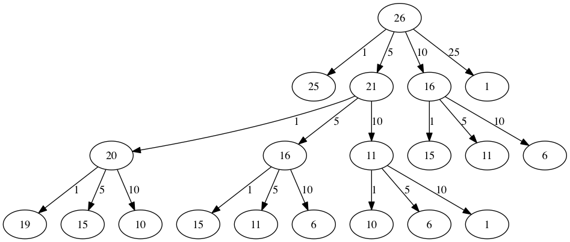

Dynamic programming is a technique of breaking the main problem into smaller subproblems and then using those subproblems to construct the answer to the main problem.
Many programs in computer science are written to optimize some value; for example, find the shortest path between two points, find the line that best fits a set of points, or find the smallest set of objects that satisfies some criteria. There are many strategies that computer scientists use to solve these problems. One of the goals of this book is to expose you to several different problem solving strategies. Dynamic programming is one strategy for these types of optimization problems.
A classic example of an optimization problem involves making change using the fewest coins. Suppose you are a programmer for a vending machine manufacturer. Your company wants to streamline effort by giving out the fewest possible coins in change for each transaction. Suppose a customer puts in a dollar bill and purchases an item for 37 cents. What is the smallest number of coins you can use to make change? The answer is six coins: two quarters, one dime, and three pennies. How did we arrive at the answer of six coins? We start with the largest coin in our arsenal (a quarter) and use as many of those as possible, then we go to the next lowest coin value and use as many of those as possible. This first approach is called a greedy method because we try to solve as big a piece of the problem as possible right away.
The greedy method works fine when we are using U.S. coins, but suppose that your company decides to deploy its vending machines in Lower Elbonia where, in addition to the usual 1, 5, 10, and 25 cent coins they also have a 21 cent coin. In this instance our greedy method fails to find the optimal solution for 63 cents in change. With the addition of the 21 cent coin the greedy method would still find the solution to be six coins. However, the optimal answer is three 21 cent pieces.
Let’s look at a method where we could be sure that we would find the optimal answer to the problem. Since this section is about recursion, you may have guessed that we will use a recursive solution. Let’s start with identifying the base case. If we are trying to make change for the same amount as the value of one of our coins, the answer is easy, one coin.
If the amount does not match we have several options. What we want is the minimum of a penny plus the number of coins needed to make change for the original amount minus a penny, or a nickel plus the number of coins needed to make change for the original amount minus five cents, or a dime plus the number of coins needed to make change for the original amount minus ten cents, and so on. So the number of coins needed to make change for the original amount can be computed according to the following:
The algorithm for doing what we have just described is shown in Task 5.12.1.a. In line 7 we are checking our base case; that is, we are trying to make change in the exact amount of one of our coins. If we do not have a coin equal to the amount of change, we make recursive calls for each different coin value less than the amount of change we are trying to make. Line 6 shows how we filter the list of coins to those less than the current value of change using a list comprehension. The recursive call also reduces the total amount of change we need to make by the value of the coin selected. The recursive call is made in line 14. Notice that on that same line we add 1 to our number of coins to account for the fact that we are using a coin. Just adding 1 is the same as if we had made a recursive call asking where we satisfy the base case condition immediately.
Exploration5.12.1.Recursive Change Calculator.
(a)C++ Implementation.
//Recursive example of trying to get the least amount of coins to make up an amount of change.
#include <iostream>
#include <vector>
#include <algorithm>
using namespace std;
int recMC_greedy(vector<int> coinValueList, int change){
if (change == 0){ //base case if, change is 0, then the number of coins have been finalized
return 0;
}
else{
int cur_max =* max_element(coinValueList.begin(), coinValueList.end());//use the maximum in the list to see how many of these can be used to form the sum
int count=int(change/cur_max); //find how many of the max is needed to make the change so that the number of coins used is minimum
coinValueList.erase(std::remove(coinValueList.begin(), coinValueList.end(), cur_max), coinValueList.end()); //erasing the current max so that a different max can be
//used in next recursion and continue the greedy process
return count + recMC_greedy(coinValueList, change-cur_max * count); //returns the counts of the coins using recursion
}
}
int main() {
int arr2[] = {1, 5, 10, 21, 25};
vector<int> coinValueList(arr2, arr2 + (sizeof(arr2)/ sizeof(arr2[0]))); //Initializing vector
cout<<recMC_greedy(coinValueList, 63)<<endl; //using the greedy algorithm for the edge case 63 whose optimal solution is 3 coins of 21
return 0; //but greedy algorithm gives 6 coins which is not the most optimum solution
}
(b)Python Implementation.
The trouble with the algorithm in Task 5.12.1.a is that it is extremely inefficient. In fact, it takes 67,716,925 recursive calls to find the optimal solution to the 4 coins, 63 cents problem! To understand the fatal flaw in our approach look at Figure 5.12.1, which illustrates a small fraction of the 377 function calls needed to find the optimal set of coins to make change for 26 cents.
Each node in the graph corresponds to a call to recMC. The label on the node indicates the amount of change for which we are computing the number of coins. The label on the arrow indicates the coin that we just used. By following the graph we can see the combination of coins that got us to any point in the graph. The main problem is that we are re-doing too many calculations. For example, the graph shows that the algorithm would recalculate the optimal number of coins to make change for 15 cents at least three times. Each of these computations to find the optimal number of coins for 15 cents itself takes 52 function calls. Clearly we are wasting a lot of time and effort recalculating old results.

Diagram of a call tree for a recursive process, as seen in Task 5.12.1.a. The tree starts at the top with the root node labeled ’26’, branching down to nodes labeled ’25’ and ’1’. Each node further branches out, with the left branch subtracting ’1’ and the right branch subtracting ’5’. The pattern continues until reaching the leaf nodes, which are either ’1’ or a number that can no longer be reduced by five. Arrows indicate the direction of the call flow, starting from ’26’ and moving down through the levels of the tree.
The key to cutting down on the amount of work we do is to remember some of the past results so we can avoid recomputing results we already know. A simple solution is to store the results for the minimum number of coins in a table when we find them. Then before we compute a new minimum, we first check the table to see if a result is already known. If there is already a result in the table, we use the value from the table rather than recomputing. This technique is called memoization and is a very useful method for speeding up frequent yet hardware-demanding function calls. Task 5.12.2.a shows a modified algorithm to incorporate our table lookup scheme.
Exploration5.12.2.Change Calculation With Memoization.
(a)C++ Implementation.
//A different attempt at making the change algorithm.
#include <iostream>
#include <vector>
using namespace std;
int recDC(vector<int> coinValueList, int change, int knownResults[]){
int minCoins, numCoins;
minCoins = change;
for (unsigned int i = 0; i< coinValueList.size(); i++){ //this loop contains the base case,
//as it returns items that are not
//returning a call to the recDC function.
if (coinValueList[i] == change){
knownResults[change] = 1;
return 1;
}
else if(knownResults[change] > 0){
return knownResults[change];
}
}
for (unsigned int y=0; y<coinValueList.size(); y++){
if (coinValueList[y] <= change){
numCoins = 1 + recDC(coinValueList, change - coinValueList[y], knownResults); //Recursive call
if (numCoins < minCoins){
minCoins = numCoins;
knownResults[change] = minCoins;
}
}
}
return minCoins;
}
int main(){
vector<int> coinValueList = {1, 5, 10, 21, 25};
int change = 63;
int knownResults[64] = {0};
cout<<recDC(coinValueList, change, knownResults)<<endl;
return 0;
}
(b)Python Implementation.
Notice that in line 15 we have added a test to see if our table contains the minimum number of coins for a certain amount of change. If it does not, we compute the minimum recursively and store the computed minimum in the table. Using this modified algorithm reduces the number of recursive calls we need to make for the four coin, 63 cent problem to 221 calls!
Although the algorithm in Task 5.12.2.a is correct, it looks and feels like a bit of a hack. Also, if we look at the knownResults lists we can see that there are some holes in the table. In fact the term for what we have done is not dynamic programming but rather we have improved the performance of our program by using a technique known as “memoization,” or more commonly called “caching.” Memoization uses what is sometimes called an opportunistic top-down approach. When you need the result of a computation, you check to see if you have already computed it, otherwise you do the new calculation and store the result.
A truly dynamic programming algorithm will take a more systematic bottom-up approach to the problem. Memoization and dynamic programming are both code optimization techniques that avoid recalculating duplicate work. Our dynamic programming solution is going to start with making change for one cent and systematically work its way up to the amount of change we require. This guarantees us that at each step of the algorithm we already know the minimum number of coins needed to make change for any smaller amount.
This is often called dynamic programming with tabulation. Let’s look at how we would fill in a table of minimum coins to use in making change for 11 cents. Figure 5.12.2 illustrates the process. We start with one cent. The only solution possible is one coin (a penny). The next row shows the minimum for one cent and two cents. Again, the only solution is two pennies. The fifth row is where things get interesting. Now we have two options to consider, five pennies or one nickel. How do we decide which is best? We consult the table and see that the number of coins needed to make change for four cents is four, plus one more penny to make five, equals five coins. Or we can look at zero cents plus one more nickel to make five cents equals 1 coin. Since the minimum of one and five is one we store 1 in the table. Fast forward again to the end of the table and consider 11 cents. Figure 5.12.3 shows the three options that we have to consider:
A penny plus the minimum number of coins to make change for \(11-1 = 10\) cents (1)
A nickel plus the minimum number of coins to make change for \(11 - 5 = 6\) cents (2)
A dime plus the minimum number of coins to make change for \(11 - 10 = 1\) cent (1)
Either option 1 or 3 will give us a total of two coins which is the minimum number of coins for 11 cents.
Image of a table representing the minimum number of coins needed to make change. The columns are labeled with the ’Change to Make’ values from 1 to 11. The rows correspond to ’Steps of the Algorithm’, with each cell filled with the minimum number of coins needed at that step for the corresponding amount of change. Initial rows are partially filled with increasing sequences of numbers, indicating the progression of the algorithm. The bottom rows are blurred and continue with an ellipsis, suggesting the continuation of the process beyond what is shown.
Figure5.12.2.Minimum Number of Coins Needed to Make.
Image of a curved numerical table representing three options to calculate the minimum number of coins for eleven cents. The table is labeled with numbers from 1 to 5 corresponding to the counts of coins used. Below the table, there are three curved arrows pointing to the number ’11’ from ’11-1’, ’11-5’, and ’11-10’, indicating the subtraction of 1, 5, and 10 cents from 11 cents to determine the next step in the calculation. The last cell under ’11’ is labeled with ’??’ to indicate the unknown minimum number of coins needed.
Figure5.12.3.Three Options to Consider for the Minimum Number of Coins for Eleven Cents.
Task 5.12.3.a is a dynamic programming algorithm to solve our change-making problem. dpMakeChange takes three parameters: a list of valid coin values, the amount of change we want to make, and a list of the minimum number of coins needed to make each value. When the function is done minCoins will contain the solution for all values from 0 to the value of change.
Exploration5.12.3.Change Calculator Using Dynamic Programming.
(a)C++ Implementation.
//Program that stores the solution for all possible amounts of change up to a given integer.
#include <iostream>
#include <vector>
using namespace std;
int dpMakeChange(vector<int> coinValueList, int change, vector<int> minCoins){
for (int cents = 0 ; cents < change + 1; cents++){ //loop finds solution for all sets of change from 0 to int change.
int coinCount = cents;
for (int j : coinValueList){
if (j <= cents){
if (minCoins[cents-j] + 1 < coinCount){
coinCount = minCoins[cents-j] + 1; //assigns the number of coins that is used to make the change.
}
}
}
minCoins[cents] = coinCount;
}
return minCoins[change];
}
int main(){
vector<int> coinValueList = {1, 5, 10, 21, 25};
int change = 63;
vector<int> minCoins(64, 0);
cout << dpMakeChange(coinValueList, change, minCoins) << endl;
return 0;
}
(b)Python Implementation.
Note that dpMakeChange is not a recursive function, even though we started with a recursive solution to this problem. It is important to realize that just because you can write a recursive solution to a problem does not mean it is the best or most efficient solution. The bulk of the work in this function is done by the loop that starts on line 4. In this loop we consider using all possible coins to make change for the amount specified by cents. Like we did for the 11 cent example above, we remember the minimum value and store it in our minCoins list.
Although our making change algorithm does a good job of figuring out the minimum number of coins, it does not help us make change since we do not keep track of the coins we use. We can easily extend dpMakeChange to keep track of the coins used by simply remembering the last coin we add for each entry in the minCoins table. If we know the last coin added, we can simply subtract the value of the coin to find a previous entry in the table that tells us the last coin we added to make that amount. We can keep tracing back through the table until we get to the beginning.
Task 5.12.4.a shows the dpMakeChange algorithm modified to keep track of the coins used, along with a function printCoins that walks backward through the table to print out the value of each coin used. This shows the algorithm in action solving the problem for our friends in Lower Elbonia. The first two lines of main set the amount to be converted and create the list of coins used. The next two lines create the lists we need to store the results. coinsUsed is a list of the coins used to make change, and coinCount is the minimum number of coins used to make change for the amount corresponding to the position in the list.
Notice that the coins we print out come directly from the coinsUsed array. For the first call we start at array position 63 and print 21. Then we take \(63 - 21 = 42\) and look at the 42nd element of the list. Once again we find a 21 stored there. Finally, element 21 of the array also contains 21, giving us the three 21 cent pieces.
Exploration5.12.4.Dynamic Programming With Coin Tracking.
(a)C++ Implementation.
//Addition to the precious program that finds the types of coins used and the process of doing it.
#include <iostream>
#include <vector>
using namespace std;
int dpMakeChange(vector<int> coinValueList, int change, vector<int> minCoins, vector<int> coinsUsed){
//This function keeps track of the number of coins needed to create the change.
for (int cents = 0 ; cents < change+1; cents++){
int coinCount = cents;
int newCoin = 1;
for (int j : coinValueList){ //loop finds solution for all sets of change from 0 to int change.
if (j <= cents){
if (minCoins[cents-j] + 1 < coinCount){
coinCount = minCoins[cents-j] + 1; //assigns the number of coins used to make the sum.
newCoin = j; //assigns the type of coins that is used to find the sum.
}
}
}
minCoins[cents] = coinCount;
coinsUsed[cents] = newCoin;
}
return minCoins[change];
}
vector<int> dpMakeChange2(vector<int> coinValueList, int change, vector<int> minCoins, vector<int> coinsUsed){
//This function keeps track of the exact coins used to make the change.
for (int cents = 0; cents < change + 1; cents++){
int coinCount = cents;
int newCoin = 1;
for (int j : coinValueList){
if (j <= cents){
if (minCoins[cents-j] + 1 < coinCount){
coinCount = minCoins[cents-j] + 1; //assigns the number of coins that have been used to make the sum.
newCoin = j; //assigns the current type of coin that will be used to make the sum.
}
}
}
minCoins[cents] = coinCount;
coinsUsed[cents] = newCoin;
}
return coinsUsed;
}
void printCoins(vector<int> coinsUsed, int change){
int coin = change;
while (coin > 0){
int thisCoin = coinsUsed[coin];
cout << thisCoin << endl;
coin = coin - thisCoin;
}
}
int main(){
vector<int> clist = {1, 5, 10, 21, 25};
int amnt = 63;
vector<int> minCoins(amnt + 1, 0);
vector<int> coinsUsed(amnt + 1, 0);
vector<int> coinCount(amnt + 1, 0);
cout << "Making change for " << amnt << " requires" << endl;
cout << dpMakeChange(clist, amnt, minCoins, coinsUsed)<< " coins" << endl;
cout << "They are: " << endl;
printCoins(dpMakeChange2(clist, amnt, minCoins, coinsUsed), amnt);
cout << "The used list is as follows: " << endl;
vector<int> coinsUsed2 = dpMakeChange2(clist, amnt, minCoins, coinsUsed);
cout << "[";
for (unsigned int i = 0; i<coinsUsed2.size(); i++){
cout << coinsUsed2[i] << ", ";
}
cout << "]" << endl;
return 0;
}